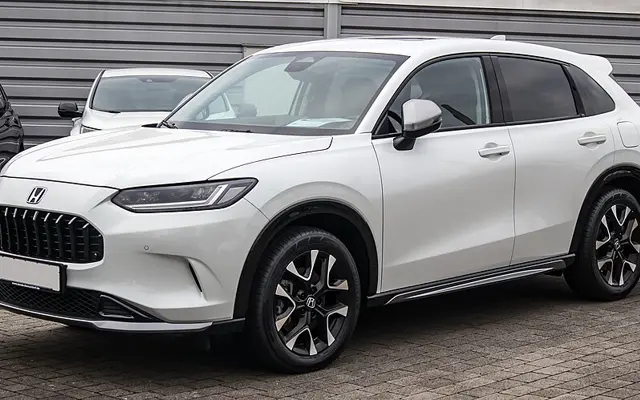

Par Motor › Precios por modelo › Honda ZR-V
Precio de segunda mano · noviembre de 2026¿Cuánto vale un Honda ZR-V de segunda mano?

Precio justo estimado de un Honda ZR-V usado en España, año por año, con los kilómetros normales para su edad y en buen estado: de 30.900 € a 40.000 €. Para tasar el tuyo con sus kilómetros reales y su estado, usa el tasador gratis.
Precios del Honda ZR-V por año
ZR-V (2023–hoy)
Precio de nuevo: e:HEV 184 CV, 37.000 €
| Año | Km normales | e:HEV 184 CV · Híbrido |
|---|---|---|
| 2026 | 5.000 km | 40.000 € |
| 2025 | 20.000 km | 34.900 € |
| 2024 | 35.000 km | 32.900 € |
| 2023 | 50.000 km | 30.900 € |
Kilómetros normales: 15.000 al año en gasolina, híbridos y eléctricos, y 20.000 en diésel, con un máximo de 100.000 km (por encima no tasamos: el precio depende demasiado del historial de cada coche). Cifras redondeadas a 100 €.
Preguntas frecuentes
¿Cuánto vale un Honda ZR-V de segunda mano?
Según el año, la versión y los kilómetros, un Honda ZR-V usado vale hoy de 30.900 € a 40.000 € en España. El más barato de nuestra tabla es un e:HEV de 2023 (30.900 €) y el más caro un e:HEV de 2026 (40.000 €). Son precios justos estimados entre particulares y profesionales, con los kilómetros normales para su edad y en buen estado.
¿Qué motorizaciones tiene el Honda ZR-V?
En nuestra base de datos hay versiones híbrido, en 1 generación: ZR-V.
¿Cómo sé si me piden demasiado por un Honda ZR-V?
Abre el tasador de Par Motor, elige el Honda ZR-V, el año y los kilómetros reales, y escribe lo que te piden. Te diremos si está por debajo del precio justo (chollo) o por encima (caro). Es gratis y no pide registro ni matrícula.
Otros Honda
Compara su coste real
El precio de compra es solo una parte. Mira cuánto te costaría al mes con combustible, seguro, neumáticos, mantenimiento y lo que pierde de valor.
Abrir el comparador →